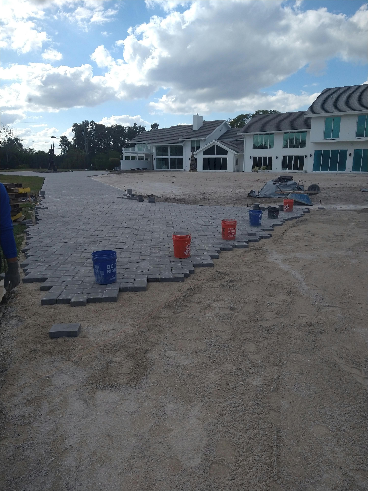

When West Palm Beach homeowners ask us whether a paver driveway is "worth it," the answer is almost always yes — and the data backs it up. Here's how paver driveways affect resale value, what buyers are looking for in South Florida, and how to maximize your return.
The Numbers: What Does a Paver Driveway Return?
According to real estate professionals in Palm Beach County, an upgraded driveway can return 75–100% of its cost in added home value — and in competitive markets, it can help a home sell faster and above asking price. A plain concrete slab driveway is expected; a beautifully designed paver driveway is a selling point.
In a neighborhood where homes are selling for $450,000–$600,000, a $12,000 paver driveway investment can increase perceived value by $10,000–$18,000 — a strong return for an exterior upgrade.
What South Florida Buyers Want
South Florida buyers — especially in Palm Beach, Broward, and Miami-Dade counties — place significant value on curb appeal. With year-round outdoor living culture, the exterior of your home is seen daily by you, your neighbors, and potential buyers. Key factors that add value:
Herringbone or large-format patterns signal quality and craftsmanship. Coordinated colors that match the home's exterior create a cohesive look that photographs well for listings. Wide driveways (able to accommodate 2+ vehicles) are highly desirable in South Florida where garages are often converted or used for storage.

Beyond the Driveway: The Compound Effect
A paver driveway that connects to a paver walkway, front porch, or backyard patio creates a cohesive outdoor living environment that adds even more value than any single element alone. This "whole yard" approach is what separates a $10,000 upgrade from a $30,000 value increase.
Realtor Insight: "Homes with upgraded driveways and outdoor spaces consistently receive more showings and sell in less time in the West Palm Beach market. Buyers notice the driveway before they even walk through the front door." — Palm Beach County Real Estate Professional
When to Upgrade Before Selling
If you're planning to sell within 1–3 years, now is the ideal time to upgrade your driveway. The project takes just 3–5 days for most homes, and the curb appeal benefit starts immediately. We've helped dozens of West Palm Beach homeowners maximize their listing price with a paver upgrade before going to market.
Call us at (561) 970-1917 for a free estimate and we'll show you exactly what the upgrade could look like for your home.